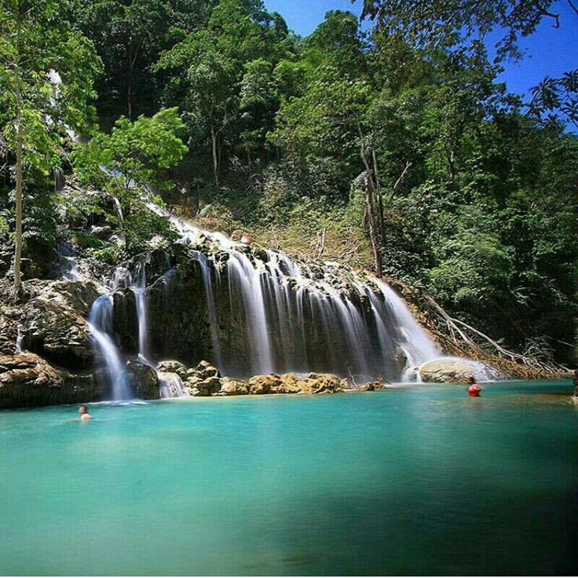

Air Terjun Lapopu
Deskripsi
Berada dalam kawasan Taman Nasional Manupeu Tanah Daru, tepatnya di Desa Lapopu, Kecamatan Wanokaka, Kabupaten Sumba Barat,
air terjun ini merupakan jenis air terjun bertingkat (berundak-undak) yang jatuh dari tebing dengan ketinggian sekitar 90 meter.
Lokasinya air terjun ini masih sangat alami dengan akses jalanan yang belum diaspal hingga beberapa meter memasuki kawasan air terjun ini.
Setibanya di pintu masuk air terjun, pengunjung dapat melakukan registrasi ke petugas penjaga taman nasional dengan membayar tiket masuk sebesar 5.000 rupiah saja.
Untuk menuju lokasi air terjun pengunjung harus berjalan kaki sekitar 500 meter di sepanjang pinggiran sungai Lapopu, dengan medan bebatuan yang cenderung menurun.
Untuk menuju lokasi air terjun pengunjung harus berjalan kaki sekitar 500 meter di sepanjang pinggiran sungai Lapopu, dengan medan bebatuan yang cenderung menurun.
Di tengah perjalanan trekking nantinya pengunjung juga akan melewati sebuah jembatan kayu sederhana yang nampak sedikit rapuh dan hanya boleh dilewati oleh maksimal dua orang sekali penyeberangan.